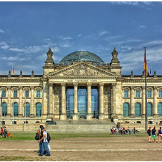
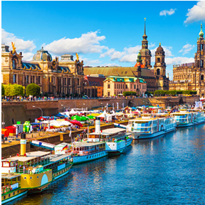
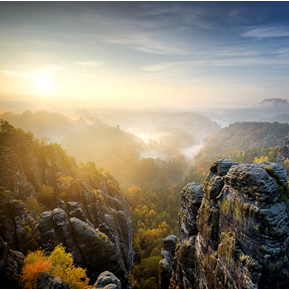
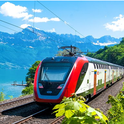
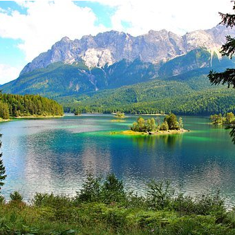
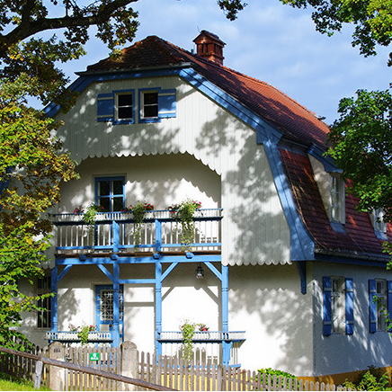
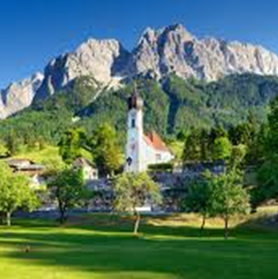
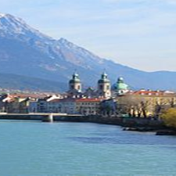
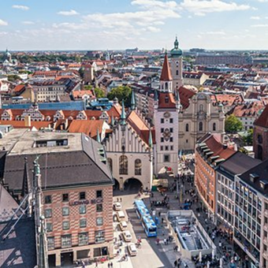
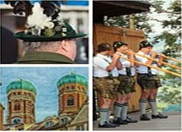

Кундалини-Йога в Альпах
Предварительная
экскурсионная программа
1 день

- вылет из Уфы в 6.00 через Москву
- прилет в Берлин в 9.00
- день в Берлине, осмотр центра города и, возможно, Бундестага
электричка по Берлину - 9€
забронировать экскурсию в Бундестаге
https://www.bundestag.de/ru/besuch
- вечером отьезд в г. Дрезден
- 2 часа на автобусе
- хостель
автобус в Дрезден - 11€
забронировать хостель - 3 x 25€
https://www.hostelworld.com/
https://www.mondpalast.de/de/buchen/sofortbuchung/
2 день

- экскурсия по городу,
- посещение картинной галереи «Старых мастеров»,
- йога у реки Эльбы,
- ресторан
забронировать экскурсию
билет - от 12,50€
3 день

- экскурсия в горы песчаника «Саксонская швейцария», поход по горам,
- возвращение на пароходе,
- посещение летнего замка саксонских королей Пильниц
электричка - 24€
пароход - 25€
вход в парк замка - 3€
4 день

- переезд в Мюнхен на автобусе (7-8 ч.),
- вечером переезд на поезде в Гармиш-Партенкирхен (1,5-2ч.)
автобус в Мюнхен - 30-40€
поезд в Гармиш и обратно - 46€
отель - 350-400€
5 день

- йога,
- посещение самой высокой горы Германии-Цугшпитце 2962м,
- по желанию поход и йога или поход к озеру Eibsee, купание в озере
фуникулер (вверх и вниз) - 50€
6 день

- посещение г. Мурнау, дома-музея В.Кандинского,
- катание на велосипеде
поезд - 15€
2 музея - 3€ и 6€
7 день

- поход и йога в горах,
- катание на летних санях
сани - 3€ (1 раз), 14€ (6 раз)
8 день

- поездка в Иннсбрукк (Австрия),
- шоппинг,
- экскурсия по городу, знакомство с австрийскими традициями
9 день

- поездка в Мюнхен,
- шоппинг,
- прощальный вечер
с ночевкой или без в зависимости от времени отлета
10 день
 - вылет из Мюнхена в Москву
с ночевкой или без в зависимости от времени вылета
Стоимость на 1 человека - 1500€
Питание (завтрак и ужин) включено в стоимость.
Перелеты Уфа-Москва, Москва-Берлин, Мюнхен-Москва, Москва-Уфа, медицинская страховка оплачиваются отдельно про прививку от ковид